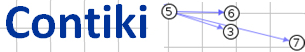
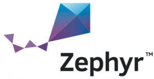
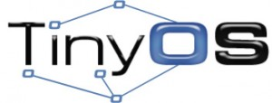

Operating Systems
IoT-LAB provides various embedded operating systems, ports of leading open-source projects to IoT-LAB open-nodes hardware. Selected OS-es are well suited for the Internet Of Things.
Operating Systems Availability
| Wsn430 Node | M3 Node | Linux Node (A8) | SAMR21 Node | ST LoRa Node | Firefly Node | nRF52DK Node | nRF52840DK Node | |
| FreeRTOS | x | x | - | - | - | - | - | - |
| RIOT | x | x | - | x | x | x | x | x |
| ContikiNG | x | x | - | - | - | x | - | - |
| Zephyr | - | - | - | - | x | - | x | x |
| OpenWSN | x | x | - | - | - | - | - | - |
| TinyOS | x | - | - | - | - | - | - | - |
| Linux | - | - | x | - | - | - | - | - |
Operating Systems Features
FreeRTOS is designed to be small and simple. The kernel itself consists of only three or four C files. It provides methods for multiple threads or tasks, mutexes, semaphores and software timers. Key features are very small memory footprint, low overhead, and very fast execution. IoT-LAB uses FreeRTOS by default for basic development for WSN430 and M3 nodes.
RIOT is a real-time multi-threading operating system that explicitly considers devices with minimal resources but eases development across the wide range of devices that are typically found in the Internet of Things. RIOT is based on design objectives including energy-efficiency, reliability, real-time capabilities, small memory footprint, modularity, and uniform API access, independent of the underlying hardware (this API offers partial POSIX compliance). Several libraries (e.g. Wiselib) are already available on RIOT, as well as a full IPv6 network protocol stack including the latest standards of the IETF for connecting constrained systems to the Internet (6LoWPAN, IPv6, RPL, TCP and UDP).

Contiki-NG is an open source operating system for networked, memory-constrained systems with a particular focus on low-power wireless Internet of Things devices. Contiki provides three network mechanisms: the uIP TCP/IP stack, which provides IPv4 networking, the uIPv6 stack, which provides IPv6 networking, and the Rime stack, which is a set of custom lightweight networking protocols designed specifically for low-power wireless networks. The IPv6 stack was contributed by Cisco and was, at the time of release, the smallest IPv6 stack to receive the IPv6 Ready certification. To run efficiently on memory-constrained systems, the Contiki programming model is based on protothreads. A protothread is a memory-efficient programming abstraction that shares features of both multi-threading and event-driven programming to attain a low memory overhead of each protothread.

The Zephyr Project, a Linux Foundation hosted Collaboration Project, is an open source collaborative effort uniting leaders from across the industry to build a best-in-breed small, scalable, real-time operating system (RTOS) optimized for resource-constrained devices, across multiple architectures.
The OpenWSN project is an open-source implementation of a fully standards-based protocol stack for capillary networks, rooted in the new IEEE802.15.4e Timeslotter Channel Hopping standard. IEEE802.15.4e, coupled with Internet-of-Things standards, such as 6LoWPAN, RPL and CoAP, enables ultra-low power and highly reliable mesh networks which are fully integrated into the Internet. The resulting protocol stack will be cornerstone to the Internet of (Important) Things.

TinyOS is a component-based operating system and platform targeting wireless sensor networks. TinyOS is an embedded operating system written in the nesC programming language as a set of cooperating tasks and processes. TinyOS programs are built out of software components, some of which present hardware abstractions. Components are connected to each other using interfaces. TinyOS provides interfaces and components for common abstractions such as packet communication, routing, sensing, actuation and storage.
Embedded Linux is created using Yocto, the build framework for embedded Linux. Yocto offers a best-in-class cross-compile environment.
Only A8 nodes are powerful enough to support an embedded Linux.